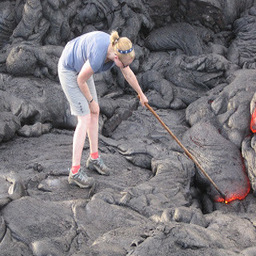

Bias bugs
COCO with gender:
| bugs: given horst, surfboard, skis, or frisbee and woman images, COCO with gender model predicts man | ||||
imSitu:
| bugs: given inside or room and man images, imSitu model predicts woman | ||||
| bugs: given outside and woman images, imSitu model predicts man | ||||

|
 | |||

|
||||
ImageNet:
| bugs: given Australian_terrier images, ImageNet model predicts Norwich_terrier. The model tends to be more likely to make mistake betwen Australian_terrier and Norwich_terrier, compared with rubber_eraser and Norwich_terrier. | ||
| bugs: given langur images, ImageNet model predicts macaque. The model tends to be more likely to make mistake betwen langur and macaque, compared with screwdriver and macaque. | ||

|
||
| bugs: given Siberian_husky images, ImageNet model predicts Eskimo_dog. The model tends to be more likely to make mistake betwen Eskimo_dog and Siberian_husky, compared with rapeseed and Siberian_husky. | ||
| bugs: given night_snake images, ImageNet model predicts king_snake. The model tends to be more likely to make mistake betwen night_snake and king_snake, compared with beacon and king_snake. | ||
| bugs: given spider_monkey images, ImageNet model predicts Titi. The model tends to be more likely to make mistake betwen Titi and spider_monkey, compared with wooden_spoon and spider_monkey. | ||